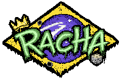
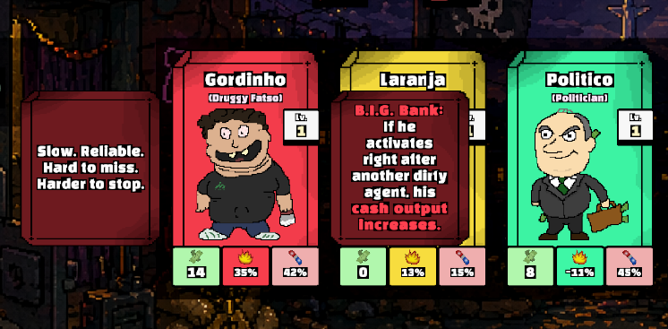
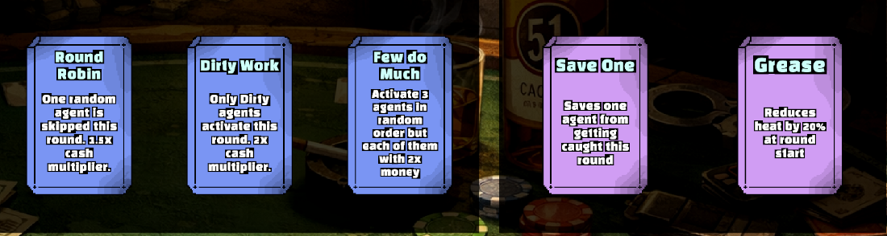
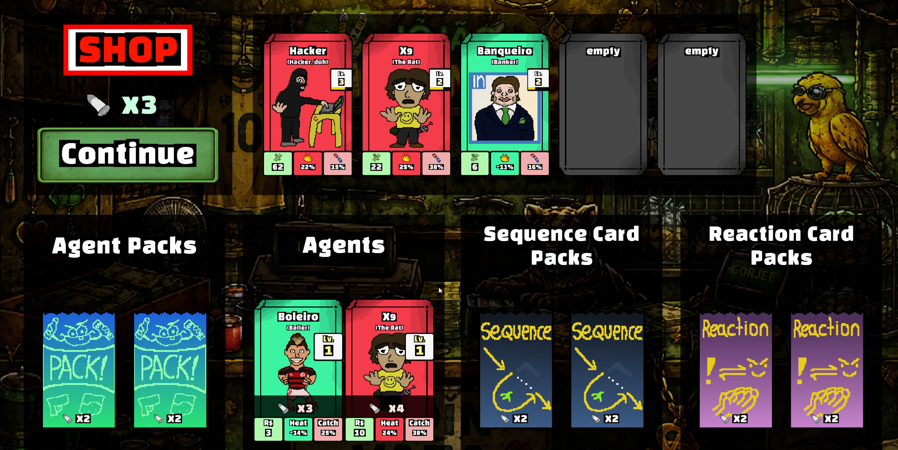
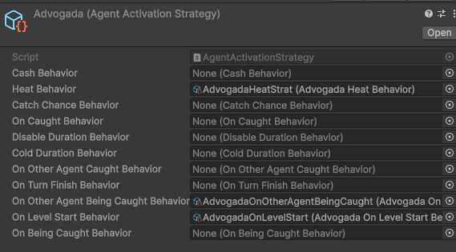
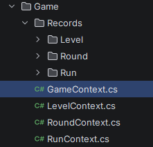
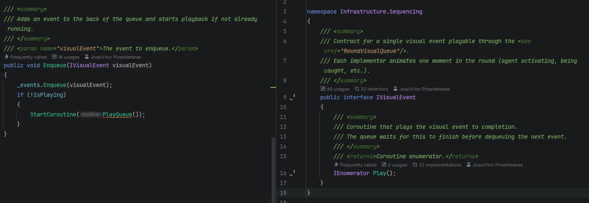

Summary
RACHA is a Balatro-inspired roguelike deckbuilder built in Unity over 6 weeks, set in the
Brazilian criminal underworld. You manage a crew of agents to generate cash and pay off
escalating agiota (loan shark) debts — miss a payment and the run is over.
Each agent has a unique ability profile built from composable behavior slots. Each payday,
the player selects a sequence card to determine activation order and reaction cards to bend
the rules. Between paydays, the shop offers new agents and cards to expand the operation.
The project was designed as a systems architecture showcase: a fully data-driven agent behavior
framework, a typed scoped blackboard system, and a visual event queue decoupling game logic
from presentation — all built from scratch with extensibility as the core design constraint.

Project Details
Content
25+ unique agents across three risk tiers (Dirty, Grey, Clean)
10 sequence cards determining activation order and round modifiers
9 reaction cards modifying mechanics before each round
5 boss modifiers applying level-scoped rule changes
Full shop economy with agent and card packs
Multi-set run progression with escalating debt targets
Systems
Composable agent behavior system with 11 independent strategy slots
Typed blackboard context system scoped to run, level, and round
Sequential visual event queue decoupling logic from animations
Per-system event buses with no cross-system direct dependencies
ScriptableObject-driven data pipeline for all agents, cards, and bosses
Team and Time
Team Size: 1 (Solo project)
Time: 6 weeks (Gauntlet-Style Production)
Engine: Unity (C#)
Goals
The goal of RACHA was to design and ship a complete roguelike loop within a 6-week production
window while building a system architecture capable of supporting a large, growing content library
without regression.
Inspired by Balatro, the project focuses on synergy-driven decision making, escalating risk,
and emergent combinations between agents, cards, and boss modifiers. The design prioritizes player
expression: every run plays differently depending on which agents survive, which cards are acquired,
and how the player chooses to manage heat versus cash output.
From a technical perspective, the core constraint was: adding new content should never require
touching existing systems. Every agent, card, and boss modifier is implemented as a new file
only — no changes to core logic. This constraint drove the entire architecture and was maintained
throughout the full 6-week production.
The project also served as a personal exploration of software design patterns applied to game
development — the strategy pattern, the blackboard pattern, event-driven architecture, and
the command/queue pattern all appear as first-class solutions to real design problems encountered
during production.
Systems
Agent Behavior System
Each agent is defined by an AgentActivationStrategy ScriptableObject composed of up to 11 independent behavior slots
Behavior slots include: Cash, Heat, CatchChance, ColdDuration, DisableDuration, OnCaught, OnBeingCaught, OnLevelStart, OnOtherAgentBeingCaught, OnOtherAgentCaught, OnTurnFinish
Each slot is an abstract ScriptableObject — new behaviors are new files with no changes to existing code
Agents delegate all output calculations and lifecycle hooks to their strategy, keeping AgentInstance as pure runtime state
25+ agents implemented across three archetypes, each with unique ability combinations

Card System
Sequence cards define activation order and apply round-scoped multipliers before any agent acts
Reaction cards apply context modifiers (saves, heat reductions, sacrifices, catch chance changes) at round start
Cards are instances wrapping definitions, persisting across levels via a DeckManager that survives scene transitions
New cards are new ScriptableObject definitions and a single strategy class — no core changes required
10 sequence cards and 9 reaction cards implemented with distinct mechanics

Round Execution Pipeline
Each round runs a full pipeline: reaction cards apply → activation list built → agents activate in order → raid checks → consequences resolved
RaidResolver handles probabilistic catch rolls, reading catch chance from multiple stacked context layers
Consequence resolution supports saves, redirects (X9), forced kills, and chain reactions (Hacker) without recursion issues
All-or-Nothing, Chain Gang, and other complex round modifiers resolved as post-loop context passes
Fully separated from visual output — the round runs to completion before any animation plays

Shop and Progression
Between paydays, the shop offers individual agents, agent packs, sequence card packs, and reaction card packs
Purchases funded by pinos (a secondary currency generated by specific agents)
Agents can be sold from the roster via drag-and-drop
Run progression structured across multiple sets, each with escalating debt targets and a unique boss modifier per level
Boss modifiers applied at level start and persist for the full payday (e.g. all catches kill, random agent disabled each round)

Technical Challenge: Composable Agent Behavior System
RACHA required a large and growing library of unique agents — each with distinct cash output logic,
heat behavior, catch chance modifiers, and reactions to game events like being caught, other agents
being caught, level starts, and turn endings.
A naive implementation would embed all agent logic into a single class or use large switch statements
keyed on agent type. This approach would require modifying core systems every time new content was
added, creating regression risk and slowing iteration — a major problem in a 6-week production window
with content being added daily.
The challenge was to design a system where adding a new agent with entirely new behavior required
zero changes to any existing file.
Solution
I implemented a strategy pattern using Unity ScriptableObjects as composable behavior slots.
Each agent's definition references an AgentActivationStrategy ScriptableObject that aggregates
up to 11 independent behavior slots — one per lifecycle event. Each slot is an abstract
ScriptableObject base class with concrete implementations as separate files.
For example, the OnTurnFinish slot has implementations for Olho Vivo (reduces next agent's
catch chance), Dupligata (replays a previous agent), Psicopata (random chance to kill a roster member),
Funkeiro (stacks a round cash multiplier), and Bebezão (chance to get himself caught for a 2x bonus) —
all as independent files, none touching each other.
AgentInstance holds only runtime state (level, status, XP) and delegates all behavior to its
strategy. Adding a new agent means creating a new AgentDefinition SO, a new AgentActivationStrategy SO,
and whichever new behavior SOs are needed — nothing else changes.

Outcome
Over 25 agents were implemented across the 6-week production window, many added in the final days,
with zero regression to existing agents or core systems.
The architecture also enabled rapid design iteration — rebalancing an agent meant changing a serialized
field in the Inspector, and creating a variant of an existing behavior (e.g. Miliciano reusing
Laranja's cash behavior with a custom heat behavior) required no new code at all.
Technical Challenge: Typed Scoped Blackboard Context System
RACHA's game logic involves many systems that need to share state across different lifetimes —
some data is relevant only for a single round (a cash multiplier from a sequence card), some
persists for a full level (a boss modifier doubling catch chances), and some spans the entire run
(the player's roster, current heat).
Without a principled approach, systems would need direct references to each other or would read
from a global state object — creating tight coupling, making systems hard to test, and producing
subtle bugs when data from one scope leaked into another.
The challenge was to let any system read and write shared state without knowing about any other
system, while keeping data correctly scoped so it resets at the right time.
Solution
I implemented a typed blackboard pattern organized into three scopes: RunContext,
LevelContext, and RoundContext — each a dictionary keyed by type, reset independently when
its scope ends.
Any system can write a typed record into the appropriate context:
RoundCashMultiplierContext.Stack(ctx, 2f) from a sequence card, or
LevelCatchChanceMultiplierContext.Stack(ctx, 1.5f) from a boss modifier.
Any system can read it: ctx.RoundContext.Get<RoundCashMultiplierContext>().
No system holds a reference to any other system — they communicate only through the blackboard.
Context records are plain C# classes with static factory methods enforcing correct initialization
and update patterns. Many use private constructors and static Stack() methods to enforce
multiplicative or additive accumulation rules.

Outcome
Every game system — agents, cards, bosses, the heat system, the raid resolver — reads and writes
shared state through the blackboard with no direct inter-system dependencies.
Adding new modifiers (new boss effects, new card mechanics, new agent abilities) required only
creating a new context record class and reading it in the appropriate system — no existing code changed.
The scoping system also eliminated an entire class of bugs where round-scoped data would
incorrectly persist into the next round.
Technical Challenge: Visual Event Queue
RACHA's round execution involves many simultaneous events — agents activating, generating cash and
heat, getting raided, being caught, triggering chain reactions, leveling up, and being removed from
the roster — all happening in a single synchronous loop that completes in milliseconds.
Presenting all of this visually required playing animations sequentially so the player could follow
what happened: Hacker gets caught, then all other agents get raided one by one, then the roster
reconciles. If game logic and animations ran in the same frame, visual events would overlap,
fire out of order, or reference agents that had already been destroyed.
The challenge was to let game logic run at full speed while ensuring visual feedback always plays
back in the correct sequence, even for deeply nested chain reactions.
Solution
I implemented a RoundVisualQueue — a singleton MonoBehaviour that acts as a sequential
playback system for visual events. Game logic fires events that enqueue IVisualEvent objects
rather than directly triggering animations. The queue plays each event to completion before
starting the next.
Visual events are self-contained objects that know how to play themselves (a DOTween sequence,
a UI update, a roster reconcile) and signal completion when done. They capture all necessary
state at enqueue time via snapshots, so they remain valid even if the underlying agent state
changes before playback.
The queue also supports a speed multiplier — a player-facing toggle that scales all
animation durations, allowing fast-forward without any changes to game logic.

Outcome
Complex multi-agent sequences — Hacker chain raids, Psicopata kills mid-round, Dupligata replays,
Bebezão self-catches — all play back correctly and readably regardless of how deep the chain goes.
The full decoupling also meant game logic could be iterated on without any concern for visual
timing, and new visual events could be added for new agents and cards without touching the
round execution pipeline.